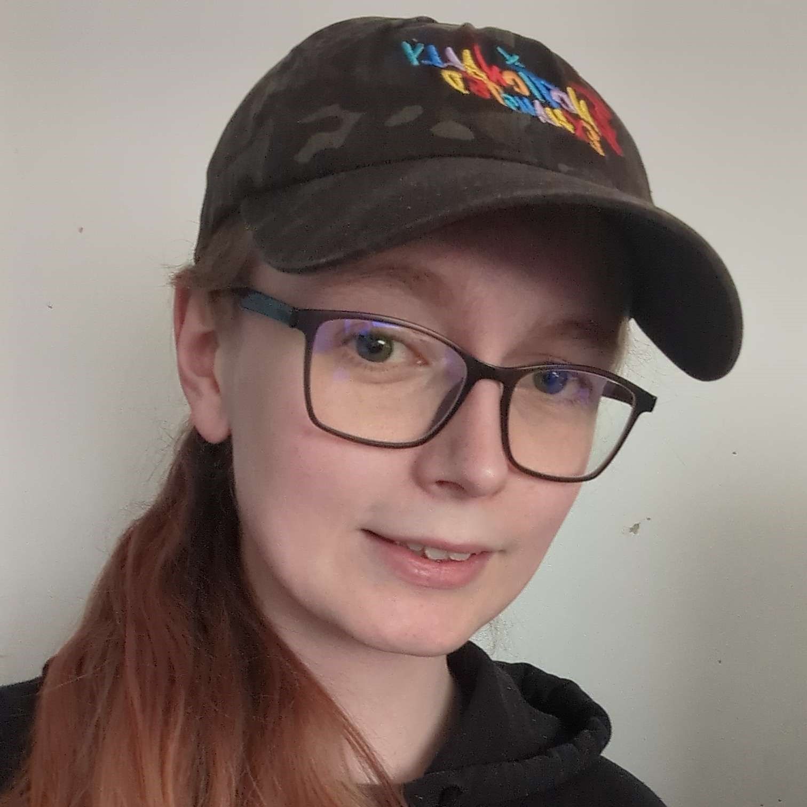
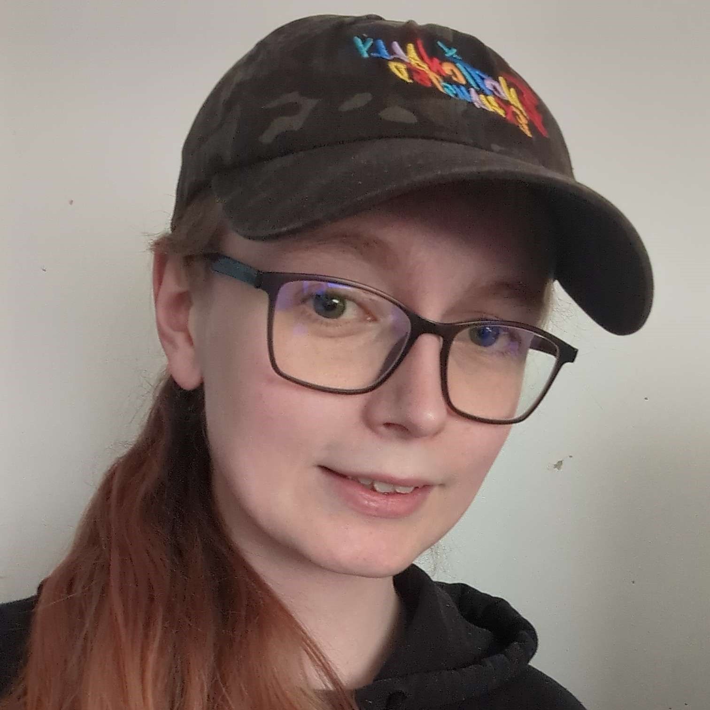

Hayley Davies
A Collection of My Game Making Things
A Collection of My Game Making Things
5 Years+
5 Years+
6 Years+
4 Years+
2 Years+
2 Years+
I'm a 2nd year Game Development: Programming student at Falmouth University. Alongside this role, I am also a Student Representative and Mentor for my course. In my spare time I occasionally stream, but mainly, I enjoy programming and creating new things.
A collection of the games that I have worked on.

In this fast paced VR experience you are tasked with handing out food to customeres and ensuring they are satisfied.
Following her fiancés death, Maria isn't quite herself; not only is she haunted by the guilt, but maybe by something more.
When your planet is being polluted by space debris what more can you do than CLEANING FRENZY!
A collection of my miscellaneous things that I have worked on, from mods to websites and everything in between.
This portfolio that you're viewing my work on right now has been made from scratch and is hosted via GitHub Pages.
The eyes bot is a simple discord bot that reacts with 👀 when a user sends a message with 👀.
For a projects to do with graphics manipulation in C#, I created a Social Media Filter which maniuplates an image using various techniques.